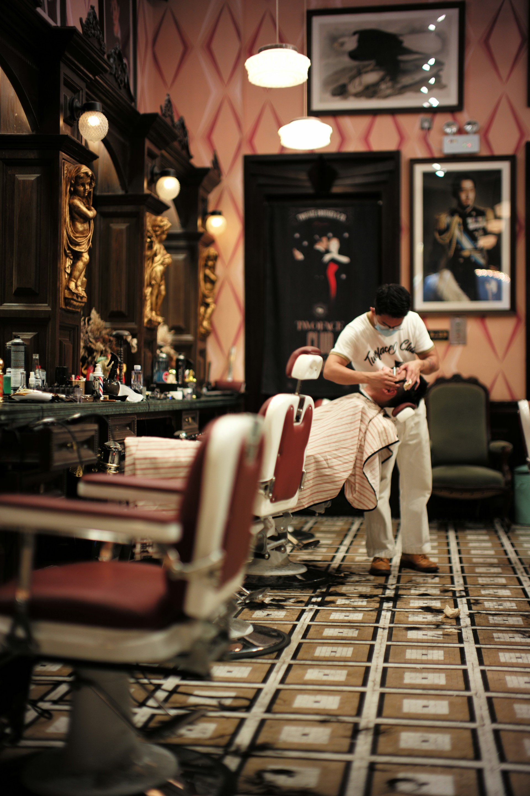

LONG BEARD BARBEARIA
onde a sua barba vira identidade.
onde a sua barba vira identidade.

Na Long Beard Barbearia, estilo não é detalhe — é identidade. Nosso espaço foi criado para quem valoriza um visual alinhado, atendimento de qualidade e uma experiência completa de barbearia. Trabalhamos com técnicas modernas, produtos profissionais e atenção a cada detalhe para garantir cortes precisos e barbas impecáveis.
Mais do que um serviço, oferecemos um momento de cuidado e confiança. Aqui, cada cliente é atendido de forma personalizada, respeitando seu estilo, formato de rosto e preferência. Seja para manter o visual ou renovar completamente o look, nossa missão é simples: fazer você sair daqui com presença, atitude e confiança.
Long Beard Barbearia — estilo que impõe respeito.